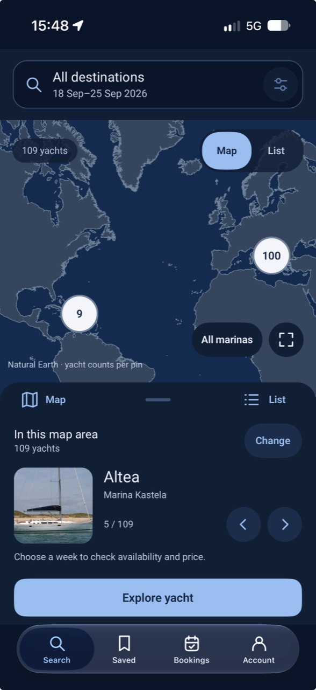

01 / Discover
A place to begin.
Explore home marinas on the map, browse yachts in the visible area, and move between map and list views.
Map counts show yachts, not confirmed availability.
An independent project · In development
Discover yachts by their home marina, explore the details, and plan your charter week. SailorSpot brings the journey together in one mobile app.
A working iOS prototype, currently in TestFlight.
Presented here with actual app screenshots.

A simpler path
from inspiration to planning.
Inside SailorSpot
Three moments from the working prototype.
Select a screenshot to see the full detail.
01 / Discover
Explore home marinas on the map, browse yachts in the visible area, and move between map and list views.
Map counts show yachts, not confirmed availability.
02 / Explore
Browse yacht photos, compare cabins and capacity, check the home marina, and choose a charter week.
Availability and pricing currently use a test mode.
03 / Review
Review dates, the charter price, required charges and booking status in one place, with details recorded at booking.
The example is simulated: no reservation or payment.
Real screens. Demonstration data. These screenshots were supplied by the project owner. They document the prototype; displayed yachts, counts, dates and prices are examples, not current offers.
Project overview
SailorSpot is an independent software project by Karol Cybul, focused on making yacht discovery and charter planning easier to understand.
Contact the project ownerA transparent look at the project
This public presentation provides a concise reference for anyone reviewing the proposed activity. No app installation or account is needed to view it.
No. This is a development-stage project. The screenshots show a test booking flow, with no real reservation or payment. This website is a presentation only.
This project overview has no account forms, analytics scripts or advertising trackers. The separate charter-planning page collects enquiries and anonymous visit counts; its privacy information explains what is saved. GitHub Pages hosts the site and may process technical request information under GitHub’s privacy statement. Contacting the project owner opens your own email application.
Karol Cybul, project owner. Email captain@sailorspot.ch for questions about the proposed activity or the prototype.
Let’s talk about SailorSpot